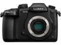

器材库 > APS及其以下画幅可换镜头数码相机 > DC-GH5

规格总览
产品类型
M4/3画幅可换镜头数码相机
发布日期
2017-01-04
影像规格
影像传感器
Live MOS
影像传感器尺寸
17.3×13mm
总像素
2177万
有效像素
2030万
色彩滤镜
原色滤镜
色彩空间
sRGB、AdobeRGB
静态图像格式
JPEG, RAW
静态图像尺寸
[4：3] 5184x3888(L)/3712x2784(M)/2624x1968(S)/4992x3744（6K 照片）/3328x2496（4K 照片）
静态图像质量
RAW、RAW + 精细、RAW + 标准、精细、标准
画幅比
3:2, 4:3, 16:9, 1:1
短片格式
MOV, MP4, AVCHD 2.0, H.264
短片尺寸
4096×2160, 3840×2160, 1920×1080
音频格式
AAC, Dolby Digital 2ch
防抖系统
图像传感器转变类型（5 轴/5 定格），双 I.S.（兼容双 I.S. 2）
除尘系统
Supersonic 滤波器
镜头和对焦
镜头卡口
Micro 4/3
对焦系统类型
反差自动对焦系统
对焦点
对比侦测：255
对焦模式
AFS（单次）/AFF（灵活）/AFC（连续）/MF
AF辅助灯/光
有
手动对焦
支持
曝光控制
测光系统
1,728 区域多重图样传感系统
测光模式
点测光, 多重测光, 中央加权测光
测光范围
0EV~18EV
曝光模式
程序自动曝光、光圈优先自动曝光、快门优先自动曝光、手动曝光
创意滤镜
富有表现力/乡愁怀旧/旧时光/高基调/暗色调/深棕色/单色/动态单色/颗粒单色/柔滑单色/印象艺术/高动态/正片负冲/玩具相机效果/鲜艳玩具相机/漂白效果/微型画效果/柔焦/幻觉/星光滤镜/单点色彩/阳光
快门类型
焦平面快门
快门速度
电子和机械快门：60 - 1/8000秒，B门最长30分钟，视频模式1/24 - 1/16000秒电子快门：1 - 1/16000秒
闪光同步速度
短于 1/250 秒
曝光补偿
±5EV以1/3EV级调整
自动曝光锁
有
自动包围曝光
1/3、2/3 或 1 EV 步长时 3、5、7 张图像，最大值 ±3 EV，单张/连拍
ISO感光度
静止图像：自动/智能 ISO/100（扩展）/200/400/800/1600/3200/6400/12800/25600（可更改为 1/3 EV 步长）创意视频模式：自动/100（扩展）/200/400/800/1600/3200/6400/12800（可更改为 1/3 EV 步长）
白平衡
AWB/AWBc/日光/阴天/阴影/卤素灯/闪光灯/白平衡预设 1、2、3、4/色温设置 1、2、3、4
自拍
10 秒，3 张图像/2 秒/10 秒
连拍
12 fps
取景器/显示屏
取景器
电子取景器
取景范围
100%
取景放大倍率
35mm相机等效值：0.76倍
屈光度调节范围
-4.0 - +3.0 (dpt)
LCD类型
TFT LCD
LCD尺寸
3.2英寸
LCD像素
162万
视野率
100%
LCD特性
触摸屏, 翻转屏
文件输入/输出
存储卡
SD/SDHC, SDXC
数据接口
USB C 型，超速 USB3.1 GEN1
视频/音频接口
HDMI 输出
无线功能
Wi-Fi, 蓝牙
电源
电池
DMW-BLF19可充电锂电池，7.2 VDC，1860 mAh
续航能力
约 410 张图像（后视监视器）、400 张图像 (LVF)、采用 H-FS12060 时 1000 张图像（节能 LVF 模式）
机身规格
颜色
黑色
尺寸
138.5×98.1×87.4mm
重量
仅机身约645g / 含电池和存储卡约725g
其它
配件端口
耳机, 麦克风输入端子
支持语言
中文（简体）, 中文（繁体）, 英语, 日语, 法语, 德语, 意大利语, 韩语, 俄语, 西班牙语
工作温度
-10~40℃
工作湿度
10~80%
附件
电池充电器（随机提供交流电源线）、电池组、机身盖、热靴罩、遮光罩、闪光同步插座盖、电池把手连接器盖、USB 连接线、肩带、电缆夹
该产品暂无存档的网友点评
产品图 / 样片
DMC-GH5
评测 / 相关文章
- 详细内容 （存档）
- M43新皇即位 松下GH5详细评测 （存档）
- ［试用］走马观花 松下GH5德国行摄 （存档）
- ［影像］松下LUMIX GH5德国行摄（黑白篇） （存档）
- ［影像］松下LUMIX GH5德国行摄（彩色篇） （存档）
- ［资讯］外媒评GH5是一台优秀的视频机器 （存档）
- ［资讯］松下最强画质 DxO公布GH5传感器成绩 （存档）
- ［资讯］松下GH5固件V1.1登场！ （存档）
- ［资讯］松下承诺会改进GH5的AF性能 （存档）
- ［试用］M43新皇即位 松下GH5实拍样片 （存档）
- ［资讯］M43新皇即位 松下GH5外观图赏 （原站已下线）
相关文章
- ［资讯］松下GH5固件V1.1登场！ （存档）
- ［资讯］松下承诺会改进GH5的AF性能 （存档）
- ［试用］M43新皇即位 松下GH5实拍样片 （存档）
- ［试用］M43新皇即位 松下GH5详细评测 （存档）
- ［资讯］M43新皇即位 松下GH5外观图赏 （原站已下线）
- ［试用］GH5行摄尼泊尔之晨昏喜马拉雅 （原站已下线）
- ［资讯］看看内部啥样 拆解松下GH5 （原站已下线）
- ［试用］松下GH5行摄尼泊尔之洒红节 （原站已下线）
- ［资讯］松下GH5真机图赏 （原站已下线）
- ［资讯］CP+2017独家报道 各家新货逐个品（上） （存档）
- ［试用］走马观花 松下GH5德国行摄 （存档）
- ［影像］松下LUMIX GH5德国行摄（黑白篇） （存档）
- ［影像］松下LUMIX GH5德国行摄（彩色篇） （存档）
- ［资讯］外媒评GH5是一台优秀的视频机器 （存档）
- ［资讯］松下最强画质 DxO公布GH5传感器成绩 （存档）
- ［资讯］高感更优秀，A7Ⅲ VS A7RⅢ、GH5 （原站已下线）
- ［试用］松下同门兄弟视频对焦大比拼 （存档）
- ［资讯］DPReview公布2017年年度相机 （存档）
- ［资讯］RAW画质对比 松下G9击败GH5 （存档）